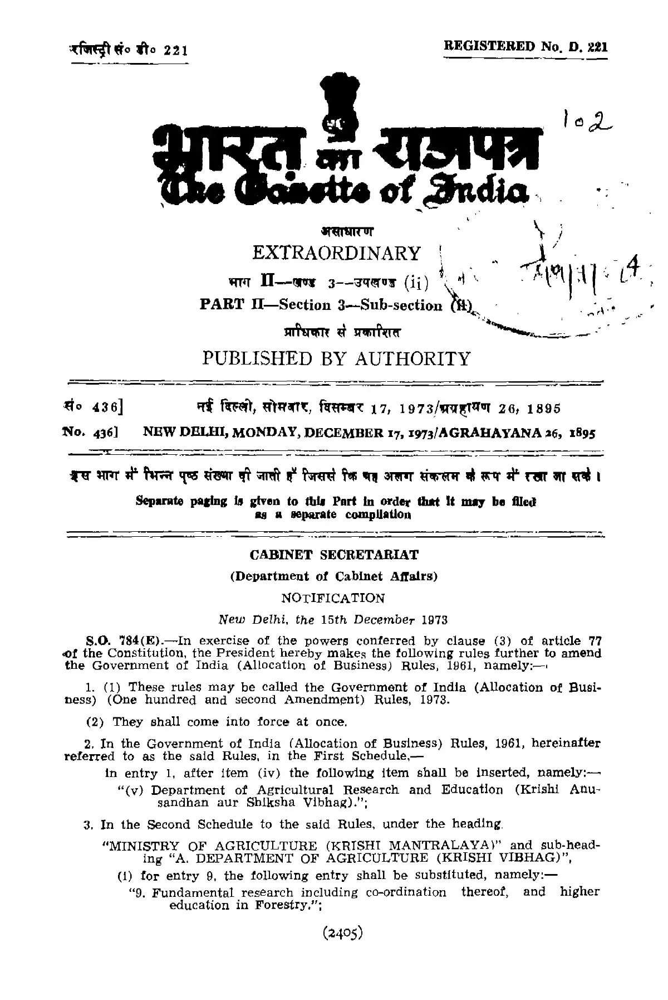
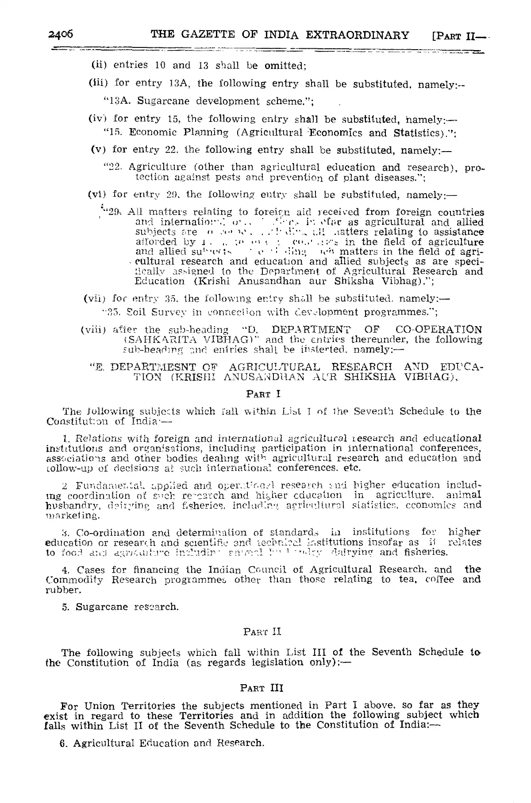
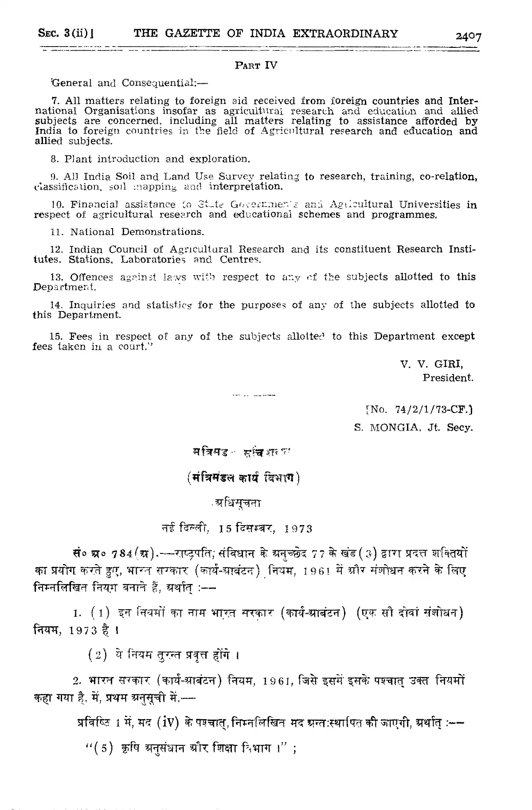
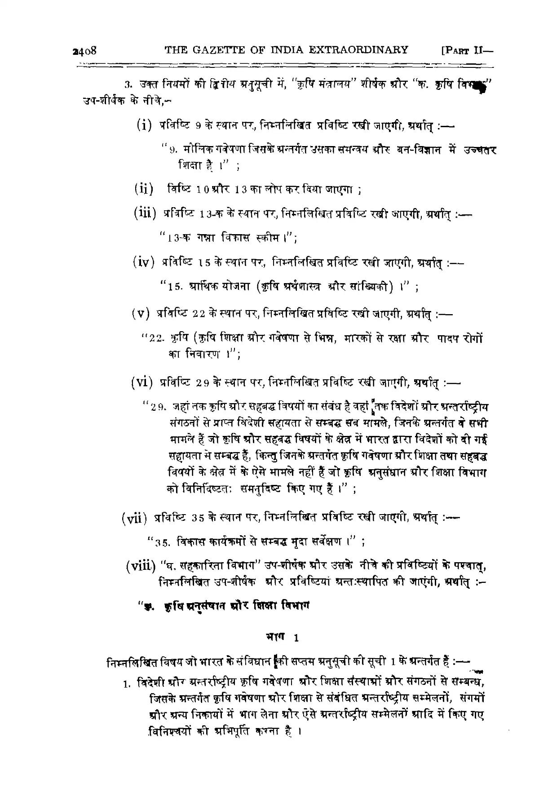
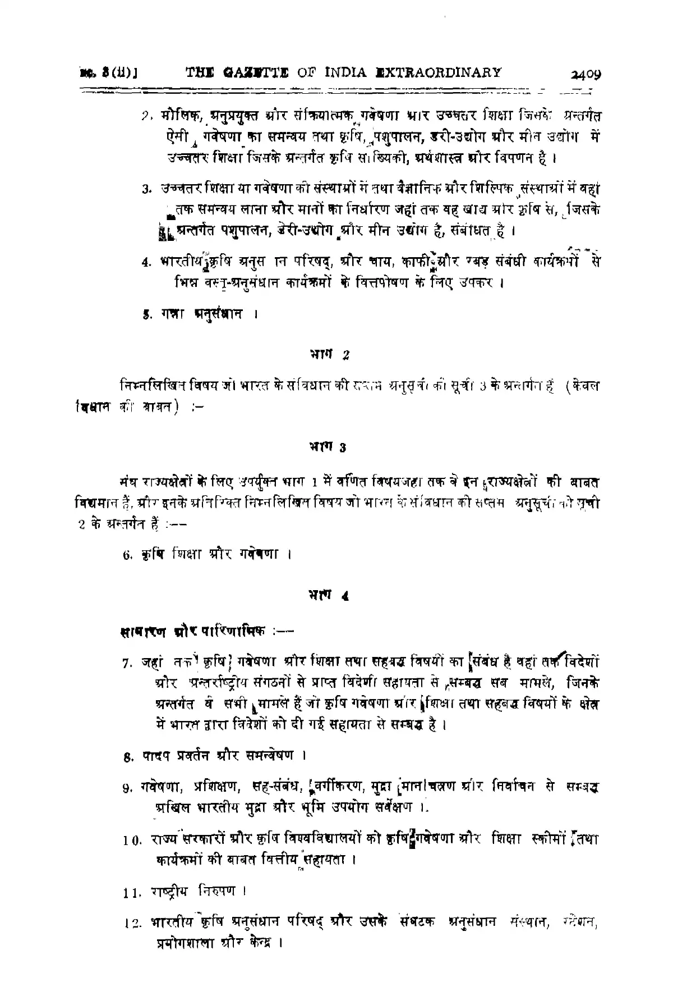
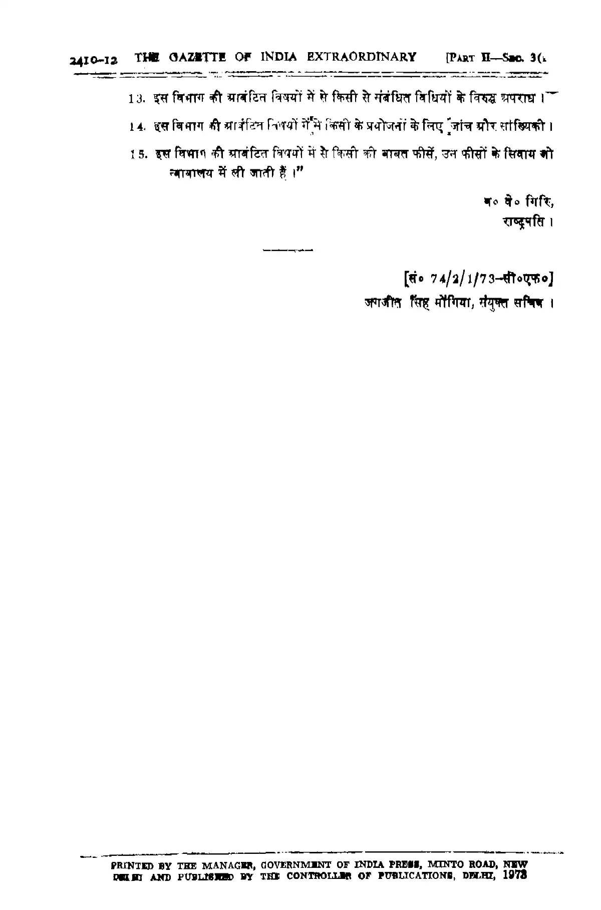

Amendment #102 (S.O. 784(E), 1973)
9 changes: 1 to the First Schedule, 8 to the Second Schedule. 9 applied
The order, page by page
Page 1 of 6

12after Schedule 1 › entry 1 › item iv
- v. Department of Agricultural Research and Education
applied at schedule 1 › ministry 1 › department v in the Rules after #102
Schedule 2 › MINISTRY OF AGRICULTURE › DEPARTMENT OF AGRICULTURE › entry 9
- 9. Fundamental research including co-ordination thereof, and higher education in Forestry.
applied at schedule 2 › ministry MINISTRY OF AGRICULTURE › department A › part I › entry 9 in the Rules after #102
Page 2 of 6

3456789Schedule 2 › MINISTRY OF AGRICULTURE › DEPARTMENT OF AGRICULTURE › entry 10; Schedule 2 › MINISTRY OF AGRICULTURE › DEPARTMENT OF AGRICULTURE › entry 13
applied at schedule 2 › ministry MINISTRY OF AGRICULTURE › department A › part I › entry 10 in the Rules after #102
Schedule 2 › MINISTRY OF AGRICULTURE › DEPARTMENT OF AGRICULTURE › entry 13A
- 13A. Sugarcane development scheme.
applied at schedule 2 › ministry MINISTRY OF AGRICULTURE › department A › part I › entry 13A in the Rules after #102
Schedule 2 › MINISTRY OF AGRICULTURE › DEPARTMENT OF AGRICULTURE › entry 15
- 15. Economic Planning (Agricultural Economics and Statistics).
applied at schedule 2 › ministry MINISTRY OF AGRICULTURE › department A › part II › entry 15 in the Rules after #102
Schedule 2 › MINISTRY OF AGRICULTURE › DEPARTMENT OF AGRICULTURE › entry 22
- 22. Agriculture (other than agricultural education and research), protection against pests and prevention of plant diseases.
applied at schedule 2 › ministry MINISTRY OF AGRICULTURE › department A › part III › entry 22 in the Rules after #102
Schedule 2 › MINISTRY OF AGRICULTURE › DEPARTMENT OF AGRICULTURE › entry 29
- 29. All matters relating to foreign aid received from foreign countries and internationl orie i far as agricultural and allied subjects are Matters relating to assistance afforded by 1. cos in the field of agriculture and allied subverts Hing h matters in the field of agri- - cultural research and…
applied at schedule 2 › ministry MINISTRY OF AGRICULTURE › department A › part IV › entry 29 in the Rules after #102
Schedule 2 › MINISTRY OF AGRICULTURE › DEPARTMENT OF AGRICULTURE › entry 35
- 25. Soil Survey in connection with development programmes.
applied at schedule 2 › ministry MINISTRY OF AGRICULTURE › department A › part IV › entry 35 in the Rules after #102
after Schedule 2 › MINISTRY OF AGRICULTURE › DEPARTMENT OF CO-OPERATION
- E. DEPARTMENT OF AGRICULTURAL RESEARCH AND EDUCA- TION
- I. PART I
- 1. Relations with foreign and international agricultural research and educational institutions and organisations, including participation in international conferences associations and other bodies dealing with agricultural research and education and tollow-up of decisions at such international…
- 2. Fundamental applied and operational research and higher education including coordination of such recarch and higher education in agriculture. animal husbandry, dairying and fisheries, including agricultural statistics, economies and marketing.
- 3. Co-ordination and determination of standards in institutions for higher education or research and scientific end technical institutions insofar as relates to food and agriculture includir a dry, dairying and fisheries.
- 4. Cases for financing the Indian Council of Agricultural Research, and the Commodity Research programmes other than those relating to tea, coffee and rubber.
and 14 more
- 5. Sugarcane research.
- II. PART II
- III. PART III
- 6. Agricultural Education and Research. SEC. 3(ii) 1
- IV. PART IV
- 7. All matters relating to foreign aid received from foreign countries and International Organisations insofar as agricultural research and education and allied subjects are concerned, including all matters relating to assistance afforded by India to foreign countries in the field of Agricultural…
- 8. Plant introduction and exploration.
- 9. All India Soil and Land Use Survey relating to research, training, co-relation classification, soil :mapping and interpretation.
- 10. Financial assistance to State Governmen's and Agricultural Universities in respect of agricultural research and educational schemes and programmes.
- 11. National Demonstrations.
- 12. Indian Council of Agricultural Research and its constituent Research Institutes, Stations, Laboratories and Centres.
- 13. Offences against laws with respect to any of the subjects allotted to this Department.
- 14. Inquiries and statistics for the purposes of any of the subjects allotted to this Department.
- 15. Fees in respect of any of the subjects allotted to this Department except fees taken in a court.
applied at schedule 2 › ministry MINISTRY OF AGRICULTURE › department E in the Rules after #102
read page break
Page 3 of 6

Page 4 of 6

Page 5 of 6

Page 6 of 6

How this document was read
Edits to the reading
| Date | By | Edit | Before → after |
|---|---|---|---|
| 21 November 2026 | claude | word corrected |
From the Government of India (Allocation of Business) Rules, 1961 and their amendments, as published by the Cabinet Secretariat (cabsec.gov.in), read by orgpedia. The readings of the older scanned gazettes have known gaps.